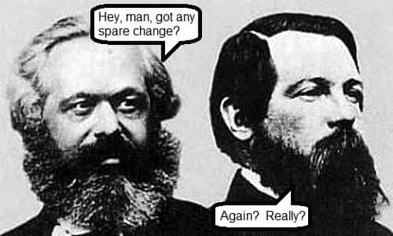
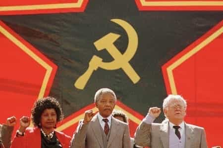

< < < Back
The Ugly Truth Of Leftist “Heroes” – Return Of Kings
Leftist politics is basically a religion these days, including a litany of saints. Many had cults of personality, some ongoing. Criticizing them gets the same reaction as telling a fundamentalist that a Biblical prophet was a nut.
Many have been greatly over-hyped, their flaws often overlooked. As usual with the leftist worldview, fair is foul and foul is fair. You’ve heard of the accomplishments of these plastic idols ad infinitum, but now we’ll cover the truth your professors and the mainstream media neglected to mention. Standard disclaimer: not all the people I compare them to were spotless either. Now let’s barbecue some sacred cows in approximate chronological order.
Jean-Paul Marat
One less demagogue, a positive population adjustment
Famous for: Martyr of the French Revolution
The reality: He’s not so famous today, but people were sure crazy about him earlier. He began as a doctor with an interest in optics. He became a demagogue who fanned the flames of the French Revolution. He published a radical paper called The Friend of the People (L’Ami du Peuple), where he regularly incited violence, for example:
Why haven’t you renounced your vain babbling and followed the advice of your friend, armed yourself with rope, with daggers, and ended the days of those of your defeated enemies who would have the audacity to rise up again.
When heads started rolling, Charlotte Corday whacked him to stop the demagoguery. She explained, “I killed one man to save a hundred thousand.” After that, his cult of personality ascended into orbit. During the goofiest days of the French Revolution, his image replaced crucifixes in the churches of Paris. Two years later, though, everyone got sick of it and decided he was a nut.
Dirty laundry: Acquired a very smelly chronic skin infection while hiding in the sewers.
Superior meanie right-winger: Napoleon Bonaparte, who quickly turned this mess around and brought forth France’s finest hour
Superior leftist: Voltaire
Karl Marx

Would you trust this man to be an expert on economics?
Famous for: Founder of Communism
The reality: He was basically a bum, mooching off his pal Engels, and a frequent flyer at the pawn shop. Four of his children died of starvation because he wouldn’t man up and support his family. (Still, his followers were far more effective at starving people.) Apparently plotting global revolution from a London pub was more fun than working. This isn’t exactly the best qualification for economics expertise. Disasters followed wherever Marxist policies were applied. Groucho was a better theoretician.
Dirty laundry: Probably knocked up Helene Demuth, his unpaid servant, though his long-suffering buddy Engels took the fall
Superior meanie right-winger: Joseph de Maistre, a theoretician with far more substance and clear thought
Superior leftist: Jeremy Bentham
Mohandas “Mahatma” Gandhi
Not too bad, but massively overrated
Famous for: India’s independence from the British Empire
The reality: He’s the best one listed. Still, all the hype is pretty cloying. In the 1982 biographical movie, he practically walked on water. (Have any Bollywood movies deified George Washington?) He did live by his principles, including nonviolence. The problem is that only works with opponents who won’t take the opportunity to stomp on you. Always being peaceful is as problematic as always being warlike.
After India seceded from the British Empire, Pakistan and Bangladesh soon seceded from India. That sparked massive rioting, claiming perhaps as many as two million lives. His response was to go on a hunger strike. Rioters must be dealt with harshly before things really spiral out of control, a lesson quite relevant today.
Dirty laundry: Drank his urine, slept with girls to test his chastity (including his grand-niece)
Superior meanie right-winger: Ian Smith, whose only faults were trusting the British government to stand by Rhodesia and listening to Henry Kissinger
Superior leftist: Mustafa Kemal Atatürk
Vladimir Ilyich Lenin
Marx sucked, but Lenin swallowed
Famous for: Dictator of the Soviet Union
The reality: Although the Communists presented him as a grandfatherly figure, an image still surviving today, he began the Soviet Union’s descent into massive political violence. “You can’t make an omelet without breaking a few eggs,” as he put it. He wasn’t nearly as bad as his successor, though if he’d lived longer he might well have been. His efforts at implementing goofy Marxist economics led to massive starvation.
Dirty laundry: Died of neurological syphilis complications
Superior meanie right-winger: Benito Mussolini, who among world leaders has a ridiculously high ratio of bad reputation to bad things he actually did
Superior leftist: Nikita Khrushchev
Mao Zedong
Famous for: Dictator of the People’s Republic of China, ripping off Hillary’s wardrobe
The reality: Chairman Mao was a decent military leader, well-schooled in the Asian style of warfare, but he sucked as the leader of China. His first catastrophe was the Great Leap Forward. That involved starting iron foundries in farming villages, without giving them the proper training or equipment. As for actually growing the crops, he had some goofy agricultural notions that were supposed to quadruple output but failed miserably.
If he’d started small-scale experiments and not relied on ass-kissers telling him everything was going great, tens of millions of lives could’ve been spared. He got sidelined after this, but resumed power by stirring up the Cultural Revolution. Part of that involved orchestrating a factional dispute leading to great bloodshed.
Dirty laundry: Slept with hundreds of groupies and didn’t get his venereal diseases treated. His popularity is surprising, since he had terrible hygiene. Other than that, his fourth wife was a vicious bunny boiler.
Superior meanie right-winger: Francisco Franco, who ended the Red Terror in Spain, and took baths
Superior leftist: Deng Xiaoping
Ernesto “Che” Guevara
Communism killed tens of millions, but at least we got a kewl T-shirt out of it
Famous for: His image on T-shirts and posters
The reality: Although his iconic picture is widespread, especially on college campuses, most people have no idea what he did. He helped Castro take over Cuba, and fought for Communism in the Congo and Bolivia. While in Cuba, he lived in a palatial house and gleefully executed hundreds or perhaps thousands of political prisoners.
Dirty laundry: Textbook sociopath, beginning with torturing animals as a child
Superior meanie right-winger: Otto Skorzeny, who radiated panache and led many daring commando raids
Superior leftist: Ho Chi Minh
Dr. Rev. Martin Luther King, Jr.
MLK, the saint that ain’t
Famous for: Civil rights martyr
The reality: MLK wasn’t nationally known until Time put him on the cover of their magazine. (Thanks, mainstream media!) It’s odd that his name is still prefixed with Dr., since he plagiarized much of his doctoral dissertation. As for the Reverend part, that too seems odd since his personal life made Bill Clinton seem like a monk. He partied with booze and hookers on the SCLC’s dime. Sometimes he’d beat them—a “moral giant” indeed!
Dirty laundry: Recorded on surveillance tape saying “I’m fucking for God!” and “I’m not a Negro tonight!” while with three White prostitutes
Superior meanie right-winger: Father Coughlin, a fellow demagogue who had a squeaky clean personal life
Superior leftist: Jesse Jackson
Nelson Mandela

Winnie, Nelson, and their buddy Joe Slovo
Famous for: ANC leader, President of South Africa
The reality: Most people assume this grandfatherly teddy bear was a political prisoner; jailed only for protesting apartheid. Instead, he was a terrorist jailed for a bomb plot, yet he’s been bestowed a ridiculous number of honors including the Nobel Peace Prize and the Lenin Peace Prize. Despite pleading guilty to 156 charges, the government later offered to free him if he renounced violence, but this “man of peace” refused.
Other than that, he was a closet Communist. After he assumed power, he fumbled the ball on the AIDS issue, leaving South Africa with one of the world’s worst infection rates. Also, beginning with his administration, the New, Improved South Africa went from being an industrialized country to a crime-ridden Third World hellhole.
Dirty laundry: His wife, Winnie Mandela, was bestowed the Robert F. Kennedy Human Rights Award, yet endorsed “necklacing”. This involved using a gasoline-filled tire to burn people to death for disagreeing with their politics. As she put it, “With our boxes of matches and our necklaces we shall liberate this country.” Further, she was complicit to kidnapping. One of the victims—fourteen year old James “Stompei” Moeketsi—was hacked to death, but she got off with a fine on appeal.
Superior meanie right-winger: Augusto Pinochet, who saved Chile from ruin
Superior leftist: Ted Kaczynski
Barack Hussein Obama, Jr.

How objective the press is! Doesn’t this just warm your heart?
Famous for: President of the United States, winner of the Nobel Peace Prize for not being George W. Bush
The reality: Huge chunks of the life of this tremendously overrated “community organizer” are shrouded in mystery, all the way back to his birth. Thus, all those low-information voters had little idea who they were electing. He has many interesting associates, such as Jeremiah Wright, Bill Ayers, Emperor Palpatine George Soros, and his buddies at ACORN.
While a junior Senator with an unremarkable legislative record, he entered the 2008 Presidential race and got sold by the media as a messiah figure. He broke a whopping number of campaign promises about what he’d do in his first year: heal the economy, halve the deficit, withdraw from Iraq and Afghanistan, close Camp X-ray, etc. He continued many of Bush the Younger’s policies, but got praised for doing the same things that got the Shrub condemnation.
His major legislative triumph was a socialized medicine scheme which caused healthcare prices to skyrocket, even though all those politicians swore up and down that wouldn’t happen. Nearing the end of his term, Wall Street is peachy again, but the economy still sucks for the real people.
Dirty laundry: Used to sell dope, which he’s surprisingly honest about, but it’s still not a great qualification for the Presidency
Superior meanie right-winger: George W. Bush, who wasn’t batting 1000 but at least nobody deified him
Superior leftist: Jimmy Carter
 If you like this article and are concerned about the future of the Western world, check out Roosh's book Free Speech Isn't Free. It gives an inside look to how the globalist establishment is attempting to marginalize masculine men with a leftist agenda that promotes censorship, feminism, and sterility. It also shares key knowledge and tools that you can use to defend yourself against social justice attacks. Click here to learn more about the book. Your support will help maintain our operation.
If you like this article and are concerned about the future of the Western world, check out Roosh's book Free Speech Isn't Free. It gives an inside look to how the globalist establishment is attempting to marginalize masculine men with a leftist agenda that promotes censorship, feminism, and sterility. It also shares key knowledge and tools that you can use to defend yourself against social justice attacks. Click here to learn more about the book. Your support will help maintain our operation.
Read more: 3 Things I Learned From Being A Marxist